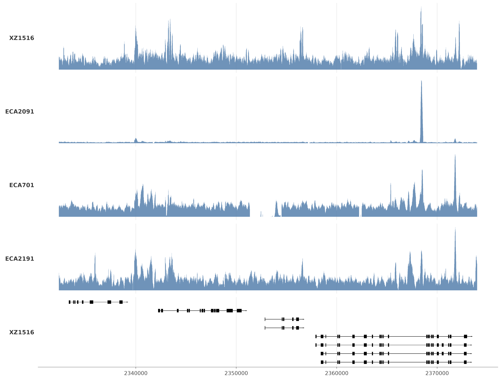

Overview
This article plots raw PEEL-1 coverage for four C. elegans strains over the same chromosome-I window. The bundled fixture contains the four BigWig files and a WS285 GTF subset for the four genes in the interval, so the workflow is self-contained and does not refer to source BAMs or other external paths.
The fixture BigWigs were made from one-base bins of the source BAMs
without normalization. The plotted scores remain raw depth:
geom_coverage() neither normalizes, smooths, thresholds,
nor expands the stored intervals to one row per base.
library(ggexon)
fixture_dir <- system.file("extdata", "peel1_coverage", package = "ggexon")
if (!nzchar(fixture_dir)) {
fixture_dir <- file.path(
dirname(dirname(knitr::current_input(dir = TRUE))),
"inst", "extdata", "peel1_coverage"
)
}
gtf <- file.path(
fixture_dir,
"WS285.ugt31-zeel1-peel1-nekl1.gtf"
)
strains <- c("XZ1516", "ECA2091", "ECA701", "ECA2191")
coverage_species <- SynSpecies(name = "PEEL-1 raw coverage")
for (strain in strains) {
individual <- SynIndividual(
annotation_file = gtf,
annotation_format = "gtf",
id = strain
)
individual <- add_annotation(
individual,
SynBigWigAnnotation(
name = "coverage",
bigwig_file = file.path(fixture_dir, paste0(strain, ".raw.bw")),
metadata = list(signal_unit = "raw_depth")
)
)
coverage_species <- add_individual(coverage_species, individual)
}
ggexon(coverage_species) +
geom_coverage(annotation = "coverage", fill = "#4C78A8") +
geom_exon(
species = "XZ1516",
chr = "I",
subset = c(2332338L, 2373985L),
annotation_type = "exon"
) +
facet_genomics(
ggplot2::vars(track),
ncol = 1,
strip.position = "left"
) +
scale_panel_coverage("free_y") +
center_panel_annotation() +
theme_ggexon_track() +
theme_ggexon_side_strips("left")
Raw, unnormalized PEEL-1 coverage for four C. elegans strains over chromosome I:2,332,338-2,373,985. Every coverage track has an independent depth scale, while one shared annotation panel shows the four-gene locus.
Reading the tracks
The BigWig values are raw, nonnegative depth. Each file owns a
first-class coverage panel, and
scale_panel_coverage("free_y") gives every strain its own
depth scale. A high-depth track such as ECA2091 therefore does not
compress the lower-depth tracks.
The single geom_exon() request uses XZ1516 as the
representative gene model for the common chromosome-I window. It
occupies one independent annotation panel below the four coverage
panels; center_panel_annotation() centers that gene model
within its panel without changing annotation data or any coverage scale.
No synthetic negative annotation band is added to a coverage panel.
For reproducibility, manifest.tsv in the fixture
directory records each source BAM, output file, interval, bin size,
normalization setting, and checksum. The BAM files themselves are not
distributed with the package.